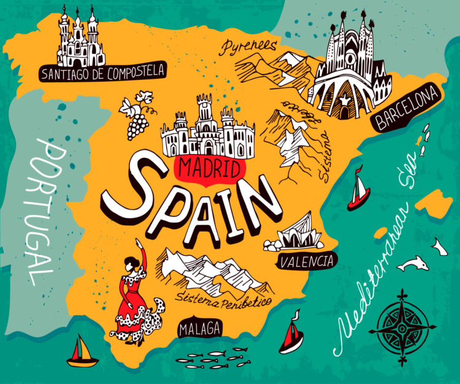

- Suprasolicitarea destinațiilor – Spania a primit peste 85 de milioane de turiști internaționali în 2023, fiind a doua cea mai vizitată țară din lume. Orașe precum Barcelona, Palma de Mallorca și Sevilla se confruntă cu fenomenul „overtourism", care presează infrastructura, locuințele și mediul natural. Autoritățile locale au introdus taxe turistice și limite la numărul de croaziere.
- Eco-turism și certificări verzi – Tot mai multe regiuni promovează turismul rural, drumețiile pe Caminos (precum Caminul Sf. Iacob) și șederea în „pueblos blancos" din Andaluzia. Peste 700 de plaje spaniole dețin certificarea „Blue Flag" pentru calitatea apei și gestionarea durabilă, plasând țara pe primul loc mondial la acest indicator.
